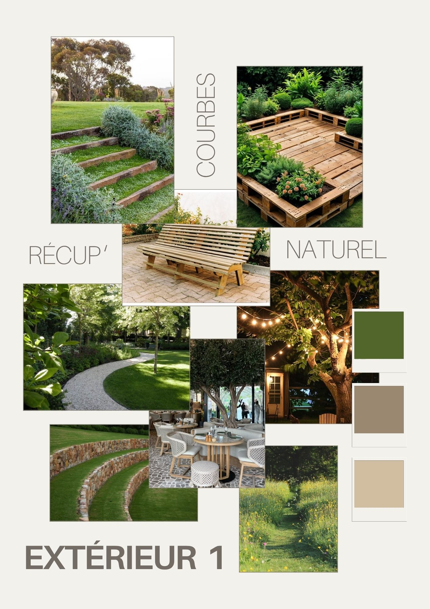

2 - Entrée principale

Ce projet de tiers lieu vise à redonner vie à un bâtiment historique, non classé, en le réhabilitant avec soins, afin de préserver son identité, tout en leur rendant pleinement fonctionnelle. À travers cette démarche, il s’agit non seulement de valoriser un patrimoine existant souvent oublié, et aussi de répondre à un véritable besoin social : offrir un espace dédié aux adolescents, une tranche d’âge, trop souvent négligée en matière d’équipements et de lieux adaptés.
Pensé comme un lieu vivant, accessible et inclusif, ce tiers-lieu devient un point d’ancrage pour les jeunes, un espace où se retrouver, créer, apprendre et s’exprimer librement, dans un cadre à la fois protecteur, stimulant et respectueux de l’histoire du site. L'extérieur a été pensé et aménagé dans l'ambiance que l'on retrouve ci-dessous.

Si tu es en bord de route, le café bénéficie d’une grande visibilité, notamment grâce à sa terrasse, idéale pendant la saison estivale. Son Steve naturel s’imprègne au reste du projet, contribuant à préserver l’esthétique en lien avec la nature environnante. Les haies, qui remplace un garde de corps traditionnel, un installe, une atmosphère plus intime, donnant la sensation d’être du centre-bourg.
Il permet également de rassembler les habitants dans une ambiance conviviale et chaleureuse, comblant un manque actuellement présent dans la commune. A gauche, se trouve la terrasse du café, unique lieu de consommation sur place ; à droite, l'intérieur avec comptoir, cuisine et sanitaires. Pour des questions de cohérence et d'identité, elle se poursuit dans celle du bâtiment principal. Pour compenser la petite surface, et éviter la sensation d'enfermement, une ouverture zénitale a été créée, apportant une lumière naturelle généreuse et agréable.
Les espaces extérieurs situés à l’intérieur du bâtiment présentaient plusieurs contraintes d’aménagement. Une première zone, initialement dédiée aux livraisons, a été requalifiée par l’installation de salons de jardin aux matériaux naturels, créant un espace convivial en lien avec les aménagements du sous-sol.
La grande pente végétalisée a ensuite été structurée afin d’en améliorer la lisibilité. Un parcours organique relie les différents points d’accès, autour duquel plusieurs fonctions ont été réparties. Une terrasse adossée à la pente accueille des activités de bien-être, tandis que des gradins végétalisés, placés au centre, permettent aux usagers de se poser ou d’assister à des événements saisonniers, comme des projections de cinéma en plein air ou autres événements spontanés. En partie basse, un espace volontairement non aménagé a été conservé pour favoriser des usages libres et spontanés.
En tant que designer d’espace, il m’a semblé essentiel de préserver certaines zones sans programmation précise, afin de permettre une appropriation libre des lieux et de favoriser la polyvalence des usages. Enfin, un espace repas avec des tables de pique-nique a été aménagé, notamment pour les familles et les usagers de la crèche voisine.